Альметьевск - город в Республике Татарстан Российской Федерации. Самый крупный город в полицентрической Альметьевско-Бугульминско-Лениногорской агломерации и четвёртый по численности населения город Татарстана.
История Альметьевска
Точных данных о времени основания деревни Альметьево не сохранилось, однако ряд косвенных свидетельств позволяет предположить, что это событие произошло на рубеже второго-третьего десятилетий XVIII века. В 1840 году, во время проводившегося в регионе опроса, альметьевцы сообщили властям о том, что их селение было основано 121 год тому назад, то есть примерно в 1719 году. В учётных письменных источниках (первых ревизских записках) жителями поселения «Альметевой, что по реке Заю» указаны ясашные татары. Основателем деревни считается мулла Альмет (вероятно, сокращение от Аль-Мухаммед, тат. Әлмәт - Әл-Мөхәммәт, башкирское личное имя Альмет.). Первое упоминание деревни в письменных источниках содержится в документах, относящихся к начальному периоду восстания 1735—1740 годов. Среди них, сохранилось письмо муллы Альмета полковнику И. Н. Татищеву, в котором сообщалось «о съездах и намерениях» восставших и об их опасности для населения Надыровской волости Чистопольского уезда. Письмо датировано 24 июня 1735 года и кончается словами: «Это письмо писал я, Альмет-мулла, з Заю с Алметевой деревни». После подавления Пугачевского бунта и перевода ясашных татар в сословия тептярей и башкирцев, в 1795 году в деревне уже учитывается 700 тептярей и башкирцев, а в 1834 году 123 башкирцев, 544 тептяря. По материалам ревизии 1859 года, при 214 дворах деревни учтены 1518 казённых крестьян и башкирцев, а также мечеть, почтовая станция, ярмарка, базары и 2 завода. До 1920 года Альметьевск входил в Бугульминский уезд Самарской Губернии. С 1920 года в составе Бугульминского кантона Татарской АССР, с 10 августа 1930 года является районным центром. 25 марта 1952 года село Альметьево было преобразовано в посёлок городского типа Альметьевск, 3 ноября 1953 года указом Президиума Верховного Совета РСФСР получил статус города.
Население
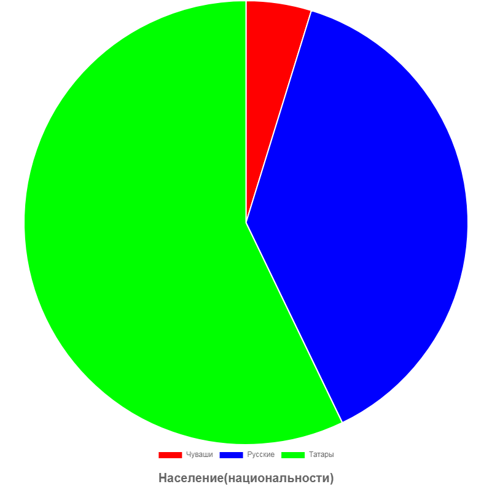
На первой диограмме мы видим процентное соотношение населения определённой национальности . По ней можно увидеть что в Альметьевске проживают 57% татар , 40% русских и 3 % чувашей . На второй диограмме мы можем видеть , как изменялось население Альметьевска . В 1970 население состовляло 90 тыс. человек , в 2021 население составляет уже 162 тыс. человек , а в наши дни в Альметьевске проживают 213тыс. человек.
Достопримечательности Альметьевска
Каскад Прудов
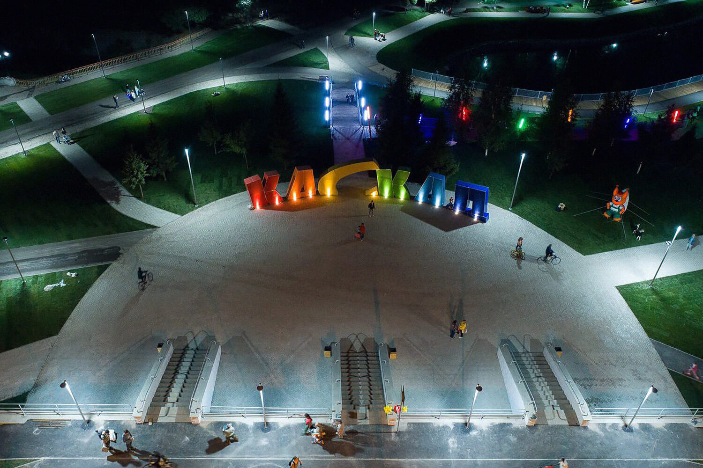
Каскад прудов — любимое место отдыха горожан, здесь назначают свидания, занимаются спортом, гуляют.
Путешественники вместе с детьми могут отдохнуть в парке у набережной городского озера: погулять по тенистым дорожкам, отдохнуть на скамейках, для детей — раздолье на игровых площадках.
Мост влюблённых
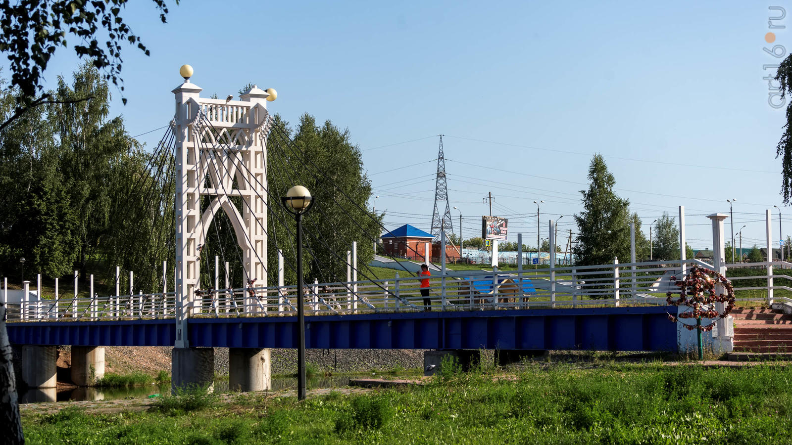
В центре города находится одно из красивейших и романтических мест Альметьевска – Мост влюбленных. Сюда по традиции приходят влюбленные и молодожены. А еще с моста можно увидеть лебедей, грациозно проплывающих по водоему.
Городской пляж
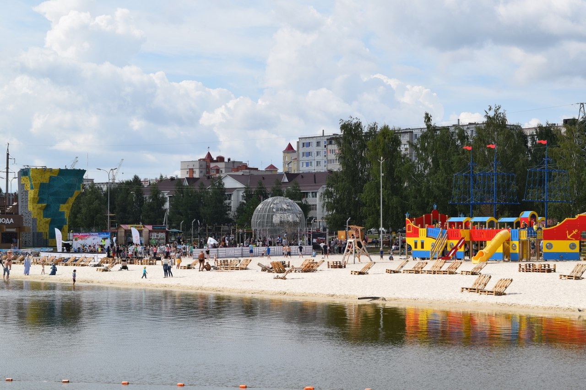
Городской пляж Альметьевска открылся 13 июля. Пляж превратился в уникальную зону отдыха, не имеющую на сегодня аналогов ни в республике, ни в стране. Ее удалось построить всего за три месяца. На пляж завезены 2,5 тыс. т кварцевого песка из Таиланда, постелен рулонный газон, для пеших прогулок оборудована дорожка по воде протяженностью 880 м. Длина водной трассы вейк-парка составляет 600 м, обучающей трассы – 150 м.
Памятник нефти
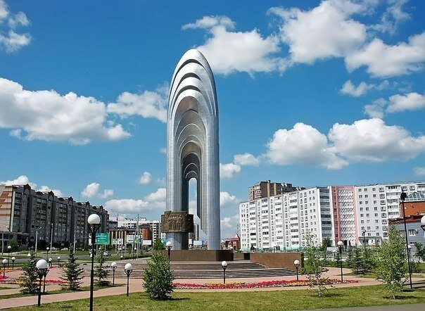
В 2007 году Альметьевск отметил добычу трехмиллиардной тонны нефти. В честь события был установлен памятник — символ нефтяного фонтана. Проект уфимского филиала Художественного фонда Союза художников РФ.
Двенадцать мощных серебряных «струй» символизируют добычу трех миллиардов нефти: первого миллиарда, добытого в 1971 году, второго — в 1981-м, третьего в 2007 году.
Собор Казанской иконы Божией Матери
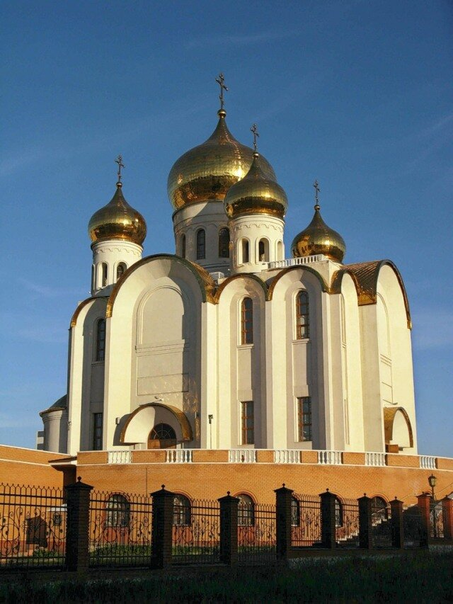
29 августа 2007 года храм сдали в эксплуатацию. Для собора была закуплена необходимая утварь и установлен уникальный фарфоровый иконостас. Двупрестольный собор состоит из двух этажей, и входит в число самых больших в Поволжье.
ДК "Нефтьче"
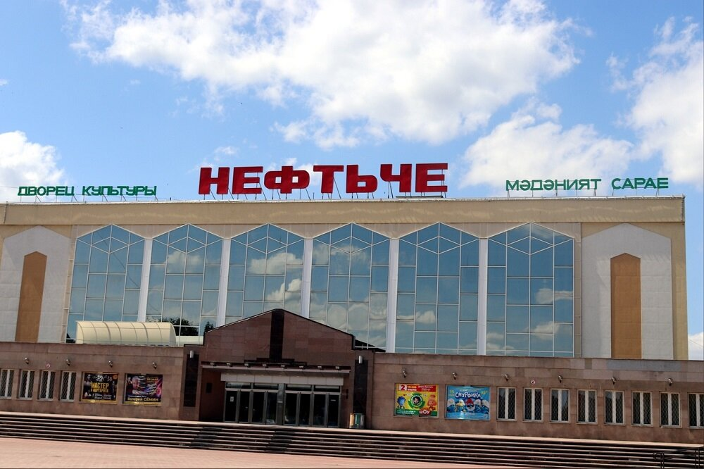
Дворец культуры «Нефтьче» культурный центр нефтяной столицы Татарстана (работает с 1981 года). Его открытие было приурочено к знаменательному событию — добыче двухмиллиардной тонны нефти.
Татарский Драматический Театр
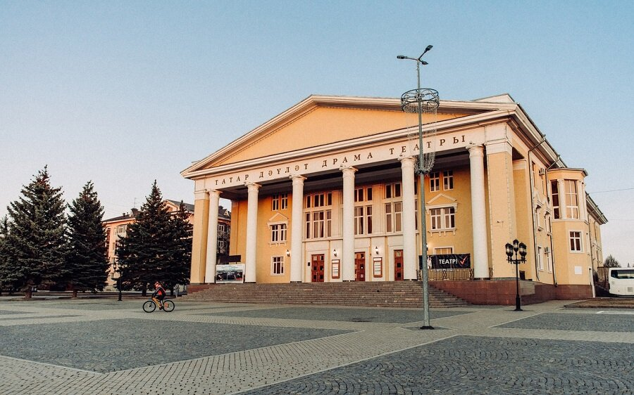
История городского театра началась в 1944 году (с образованием любительской труппы начинающих актёров). Здание драматического театра — архитектурная жемчужина Альметьевска с белоснежными колоннами и высокими сводами.
Спектакли идут на русском и татарском языке.
Парк Здоровья
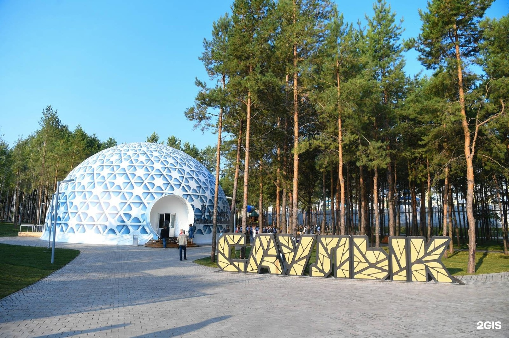
В функциональном наполнении парка выделяется три участка: площадь с фонтаном, детская площадка и оздоровительная спортивная площадка. Центральная площадь с фонтаном — знаковое место парка. Здесь смогут встречаться с родственниками пациенты больниц, отдыхать и общаться местные жители. Для отдыха и игры детей установили детскую площадку с батутами, горками и качелями. Основные её элементы изготовлены из натурального материала — дерева. В спортивной зоне появились тренажеры для реабилитации пациентов больницы и для людей с ограниченными возможностями здоровья.
Городской парк
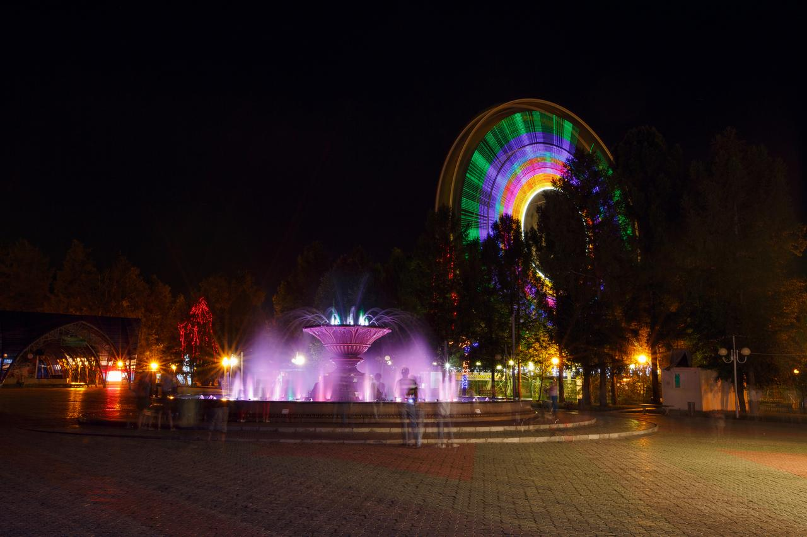
В настоящее время на территории парка ежегодно высаживаются клумбы с более чем 25 видами однолетних и многолетних цветов, большую часть занимают газоны, а также насаждения кустарников и деревьев. Кроме того, парк украшен малыми архитектурными формами, выполненными из природных материалов.
Для посетителей доступны 30 аттракционов, в том числе и экстремальных, спортивные площадки, теннисные корты, детское кафе «Ассоль», зоопарк, пункт проката спортивного инвентаря. В выходные на местной сцене выступают коллективы художественной самодеятельности. Также здесь регулярно отмечаются государственные и традиционные праздники народов Республики — от Дня России и Дня Республики Татарстан до масленицы и курбан-байрама.
Парк Шамсинур
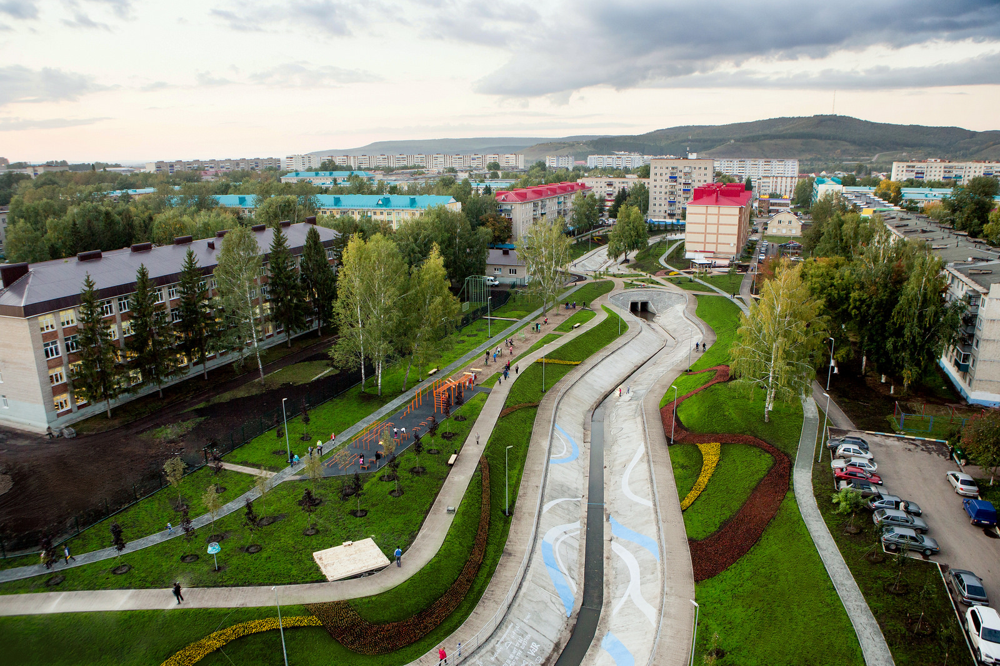
В парке нет ни одной ступеньки — уровни плавно перетекают один в другой; все зоны оборудованы системами освещения. Это доступная территория для велосипедистов, родителей с колясками и людей с ограниченными возможностями. Открытость и безопасность — основные принципы устройства территории.
Экономика Альметьевска
В Альметьевске располагается офис нефтяной компании ПАО «Татнефть», от которой город получает большинство налоговых поступлений. Кроме того, в городе расположены:
-Альметьевский молочный комбинат
-компания «Татнефтедор», одна из крупнейших компаний дорожной отрасли Татарстана,
-компания «Татнефтепром», самая крупная малая нефтяная компания Татарстана,
-компания «Булгарнефть» (ПО «ЕВРОСИБНЕФТЬ»),
-«СМП-Нефтегаз»,
-завод «Алнас», предприятие по производству полнокомплектных электроцентробежных насосов для добычи нефти,
-фабрика «Алсу», предприятие по производству чулочно-носочной продукции под брендом «Носкофф»,
-Альметьевский трубный завод (нефтегазопроводные трубы) и другие предприятия.
-Объём отгруженных товаров собственного производства и выполненных работ и услуг собственными силами по обрабатывающим производствам за 2011 год составил 28,83 млрд рублей.
-В 1995 году, по инициативе Гатина Роберта Фатыховича, Садриева Мисхата Аухадиевича и Альметьевского союза промышленников и предпринимателей в городе было открыто отделение Торгово-промышленной палаты Республики Татарстан, в дальнейшем получившее название Юго-Восточный филиал ТПП РТ. Возглавил его Гатин Роберт Фатыхович.
-Объём отгруженных товаров собственного производства в 2007 году составил 222,8 млрд рублей (1 место в республике)
.png)